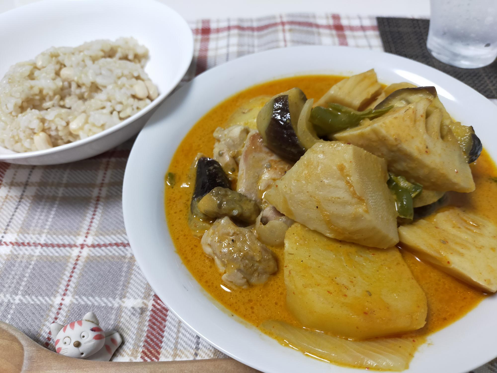

ロイタイで簡単マサマンカレー
材料・金額
| 材料 | 購入金額 | 使用量 | 金額 | kcal |
|---|---|---|---|---|
| マサマンカレー （レトルト） |
214 | 1pac | 214 | 368 |
| 鶏もも肉1枚 | 377 | 250g | 377 | 500 |
| なす4本入 | 302 | 1本 | 76 | 21 |
| 水煮たけのこ1本 | 214 | 1/2本 | 107 | 35 |
| ピーマン10個入 | 214 | 2個 | 43 | 20 |
| じゃがいも8個入 | 214 | 2個 | 54 | 80 |
| 玉ねぎ4個入 | 214 | 1/2個 | 27 | 28 |
| ごはん5kg | 1,922 | 180g | 70 | 680 |
| 合計 | - | - | 968 | 1,732 |
| 1食分（合計×0.5） | - | - | 484 | 866 |
振り返り
すべての材料を一口大に切り、油を引かずにフライパンにフタをして蒸し焼きにして、鶏がこんがりしたら、カレーソースを入れて煮込むだけの、簡単夜ご飯です。
ロイタイシリーズは、イエローカレーも試しましたが、辛いものに強くないため、我が家ではマサマンカレーが定番になりました。
計算してみたら、意外と経費がかかっていることに気が付きました。
今日は、新型コロナウイルスのワクチン2回目（ファイザー）を接種してきました。1回目は腕が少し痛かったのですが、2回目はどこも痛くないようです。熱が出たりすると嫌なので、今日もさっさと寝てしまおうと思います。